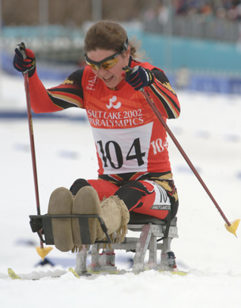

Module 1—Thinking Energy
Lesson 4—Enthalpy Changes
 Get Focused
Get Focused

© Courtesy of Shauna Maria Whyte
Cross-country skiing is a popular sport and may be one of the activities participants in an ecotour might undertake. Skiing is physically strenuous and requires a lot of energy. In addition to the large amount of energy used to cross the snow-covered terrain, a skier will expend energy to maintain his or her body temperature in cold winter weather. To conserve energy, paralympians sometimes use hot packs on their legs while training and racing on extremely cold days. Can you think of a similarity between a human body and a hot pack with respect to energy changes?
In previous science courses you learned that the human body is designed to convert chemical energy from the food we eat into energy cells can use. Heat is a common by-product of cellular processes. A hot pack also releases energy as heat when a change occurs in the matter inside. Energy changes can be classified as either exothermic or endothermic. An exothermic process will warm its surroundings as it radiates energy. Endothermic processes absorb heat from the surroundings, often reducing the temperature of the surroundings.
exothermic: a process that radiates energy to its surroundings
endothermic: a process that absorbs energy from its surroundings
From your study of biology you know that humans are made up of millions
of tiny cells. When you study chemistry you also consider the
interactions of matter at the particle level. Why do the reactions
involved in the use of food and those involved in the hot pack create
heat? What is happening in both of these processes at the particle
level, and how do those changes relate to the energy change involved in
each of these processes? In Lesson 4 you will explore enthalpy changes.
Consider the following questions as you complete Lesson 4:
- What changes occur during a chemical reaction at the particle level?
- Why do chemical changes and energy changes occur at the same time?
-
What is enthalpy?
 Module
1: Lesson 4 Assignment
Module
1: Lesson 4 Assignment
In this lesson you will
- draw cartoons to illustrate the different kinds of energy matter can have
- analyze calorimetric data and quantify the energy changes that occur
- review the assumptions involved in calorimetry as they relate to enthalpy changes
There is no assignment for this lesson; however, you will complete Try This and Reflect and Connect.